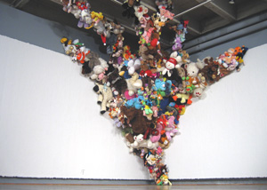

Lift Off
Jim Edgeworth, The Seeds of Wonder, 2009, stuffed animals and mixed media, Courtesy of the Artist
|
 |
Opening in May 2010 at the San Jose Institute of Contemporary Art (ICA), Lift Off, an annual exhibition presenting the freshest artwork to emerge from the local art scene.
Now in its 6th year, Lift Off runs from May 29 through June 19 in the ICA’s Main Gallery and features the collective work of San Jose State University’s (SJSU) Master of Fine Art (MFA) 2010 graduates. This exhibition marks the culmination of two to three years of intensive investigation by students in the Fine Arts program at SJSU and launches the graduates into the next chapter of their artistic pursuits.
This year’s exhibiting artists include: Kirkman Amyx, Pernilla Andersson, Tracy Burk, shiloh burton, Yunan Cao, Wendy Crockett, Jim Edgeworth, Johnny Hanna, Hedwig Heerschop, Barbara Horiuchi, Trevor Koch, John Pickelle, Beverly Rayner, Elizabeth Robera, Danielle Siembieda, Susan Suriyapa, and Hongbiao Wang. The exhibition features sculpture, photography, painting, mixed media and new media. An artists’ reception will be held on Friday, May 28 from 6-8pm at the ICA.
"Lift Off is an extension of the ICA’s commitment to provide meaningful opportunities for emerging artists to present their work to the public,” says Susan O’Malley, ICA’s assistant curator. “We are
always excited to present the work of new artists and we are fortunate to have developed a wonderful collaboration with a diverse group of art makers and thinkers who reflect the cultural vibrancy of our community,” adds O’Malley. In conjunction with the exhibition, the MFA graduates will publish a catalogue of their work with essays by Art History Master Degree candidates Tariq Abdul-Wahad, Sarah Goodman, Heather Peterson, Maayan Glaser-Koren and Samantha Johnson.
# # #
San
Jose Institute of Contemporary Art 560 South First Street San Jose, CA 95113 tel (408) 283-8155 fax (408) 283-8157 |